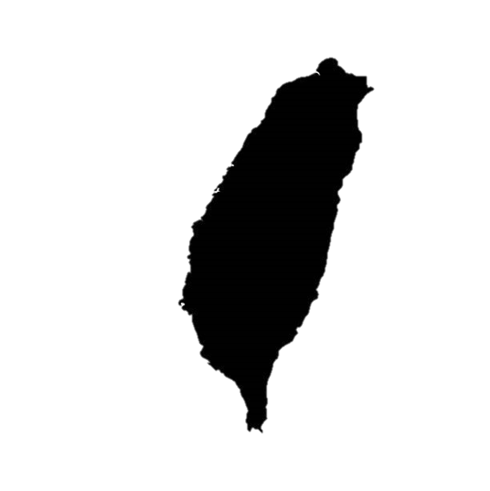
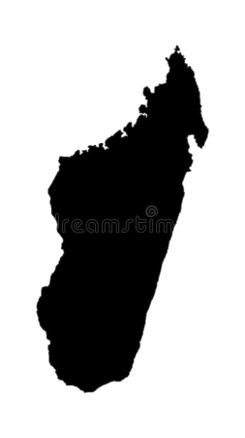
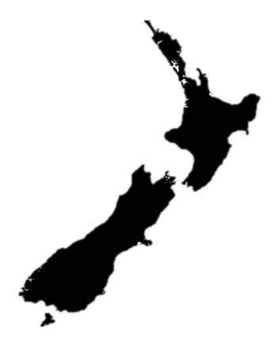
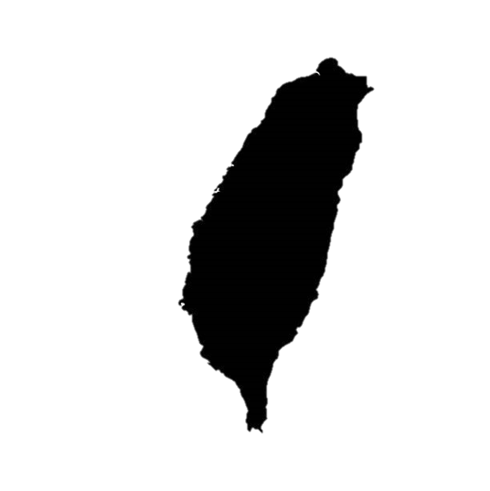
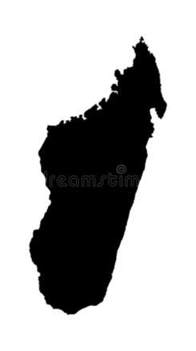
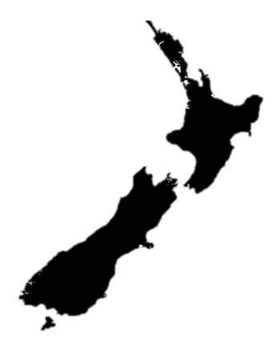

關係南島語族分布
目前的語言學研究而言，臺灣至少是最古老的南島民族居住地之一。
 |
↑↑↑↑ 點擊了解更多 ↑↑↑↑
◆◇◆◇◆◇◆◇◆◇◆◇◆◇◆◇◆◇◆◇◆◇◆◇◆◇◆◇◆◇◆◇◆◇◆◇◆◇◆◇◆◇◆◇◆◇◆◇◆◇◆down◇◆◇◆◇◆◇◆◇◆◇◆◇◆◇◆◇◆◇◆◇◆◇◆◇◆◇◆◇◆◇◆◇◆◇◆◇◆◇◆◇◆◇◆◇◆◇◆◇◆◇◆◇
四地分布範圍
|  |  |  |
關係南島語族分布
目前的語言學研究而言，臺灣至少是最古老的南島民族居住地之一。
↑↑↑↑ 點擊了解更多 ↑↑↑↑
◆◇◆◇◆◇◆◇◆◇◆◇◆◇◆◇◆◇◆◇◆◇◆◇◆◇◆◇◆◇◆◇◆◇◆◇◆◇◆◇◆◇◆◇◆◇◆◇◆◇◆down◇◆◇◆◇◆◇◆◇◆◇◆◇◆◇◆◇◆◇◆◇◆◇◆◇◆◇◆◇◆◇◆◇◆◇◆◇◆◇◆◇◆◇◆◇◆◇◆◇◆◇◆◇
四地分布範圍
   『北』台灣 、 『西』馬達加斯加 、 『南』紐西蘭 、 『東』復活節島
◆◇◆◇◆◇◆◇◆◇◆◇◆◇◆◇◆◇◆◇◆◇◆◇◆◇◆◇◆◇◆◇◆◇◆◇◆◇◆◇◆◇◆◇◆◇◆◇◆◇◆◇◆◇◆◇◆◇◆◇◆◇◆◇◆◇◆◇◆◇◆◇◆◇◆◇◆◇◆◇◆◇◆◇◆◇◆◇◆◇◆◇◆◇◆◇◆◇◆◇◆◇◆◇
回頂端